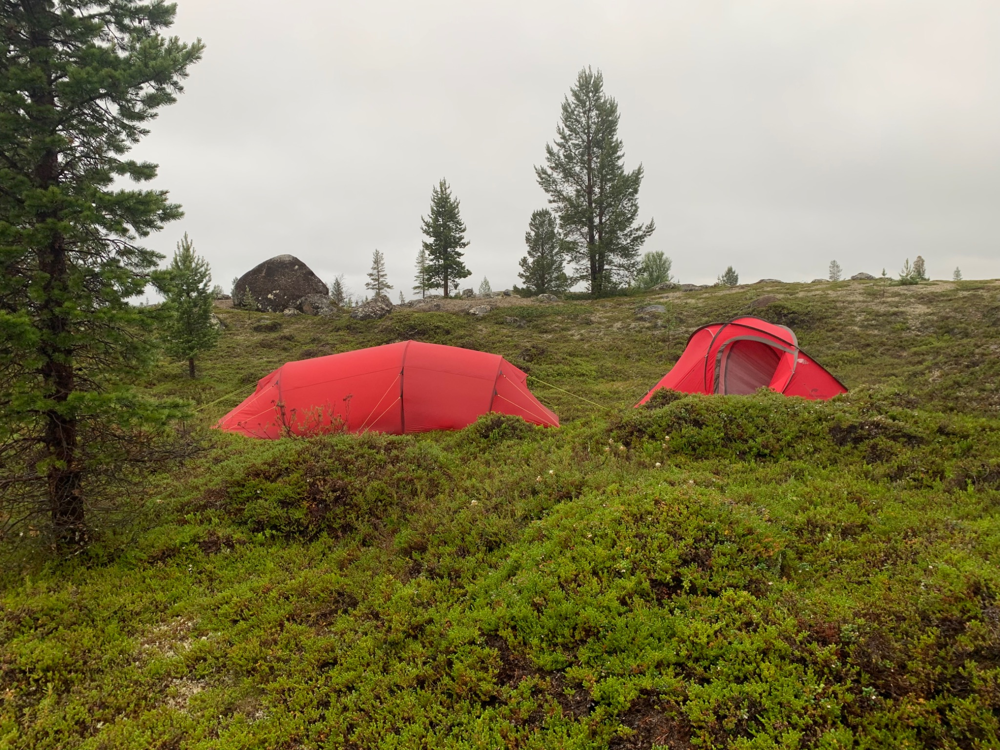

Kuka olen?
Minusta
Olen taustaltani luokanopettaja ja toiminut siinä ammatissa lähes kaksikymmentä vuotta. Minulla on terveystiedon aineenopettajan pätevyys ja olen erikoistunut myös liikunnan opettamiseen. Tällä hetkellä opetan ammatillisessa oppilaitoksessa digitaitoja nuorille ja aikuisille.
Työssäni ja vapaa-ajalla olen nähnyt digimurroksen ja älylaitteiden vaikutuksen lapsiin ja nuoriin. Valinnaiskursseja luonnossa vetäessäni olen huomannut luonnon rauhoittavan vaikutuksen lapsiin.
Saman rauhoittavan vaikutuksen olen huomannut myös itsessäni. Olen aina viihtynyt luonnossa ja saanut sieltä arvokkaita kokemuksia. Olen liikkunut luonnossa jo yli neljäkymmentä vuotta. Läheskään aina minun ei ole tarvinnut mennä niin sanotusti merta edemmäksi kalaan, vaan luonnossa liikkumiseen on riittänyt lähipuisto tai mahdollisimman lähellä oleva luontokohde.
Luontorakkauden vuoksi opiskelin vuosi sitten työn ohessa erä- ja luonto-oppaaksi Savon ammattiopistosta. Haluan kaiken digihömpän keskellä tarjota myös muille mahdollisimman tärkeitä ja vaikuttavia luontoelämyksiä.
Retkittäin – erä- ja luontopalvelut
Retkittäin tarjoaa vinkkejä, inspiraatiota ja konkreettisia työkaluja retkeilyyn. Tavoitteeni on madaltaa kynnystä lähteä luontoon – oli kyseessä ensikertalainen, perhe, kouluryhmä tai yrityksen virkistyspäivä.
Luonto kuuluu kaikille. Autan sinua löytämään oman tapasi nauttia siitä.
Lähde mukaan
Jos haluat kysyä palveluistani, tehdä yhteistyötä tai muuten olla yhteydessä, löydät yhteystietoni Yhteys-sivulta.